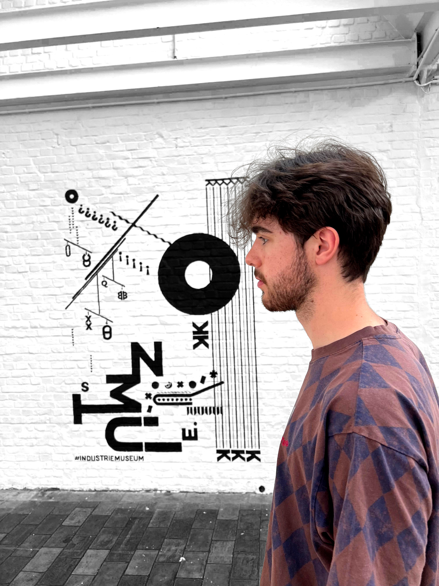

Over mij
Hallooo, mijn naam is Ianto. Ik ben een grafisch ontwerper, woon in Mechelen en studeer in Gent. In mijn ontwerpen experimenteer ik met beeld en tekst, om zo telkens interessante composities te creëren. Dit telkens in de juiste vibe en stijl gieten, is een uitdaging die ik telkens graag aan ga!
Een goed concept is bij elk goed design of merk heel belangrijk, dit zie ik dan ook als rode draad door al mijn ontwerpen. Ik wil hiermee mijn ontwerpen emotionele waarde geven, en daarmee ook een boodschap overbrengen. Dit consistent doen zal zeer bevorderend zijn voor de herkenning van een merk doorheen verschillende media.
Een deel van mijn specialiteiten zijn: poster ontwerp, branding, webdesign, magazine ontwerp, concepten bedenken en nog veel meer.
Naast graphic designer ben ik ook groot muziekliefhebber, een sociale vlinder en (heel soms) een flauwe plezante!
Check zeker ook mijn Instagram pagina!